STREAM
SURVIVAL
Ты выживаешь. Чат мешает.
3D-выживание для стримеров от 1-го и 3-го лица. Зрители Twitch насылают зомби, бури и ночь — или строят свой город.
// Официальная статистика (честно-честно)
// Живые кадры (ну почти)
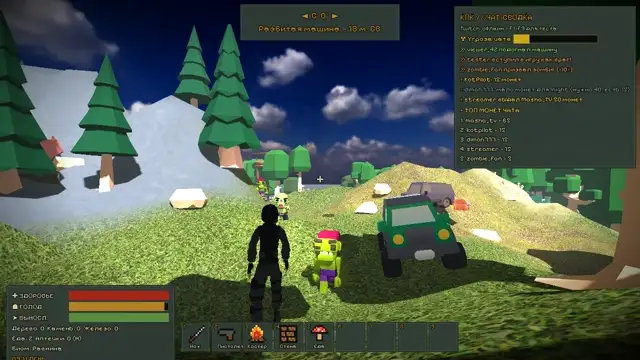
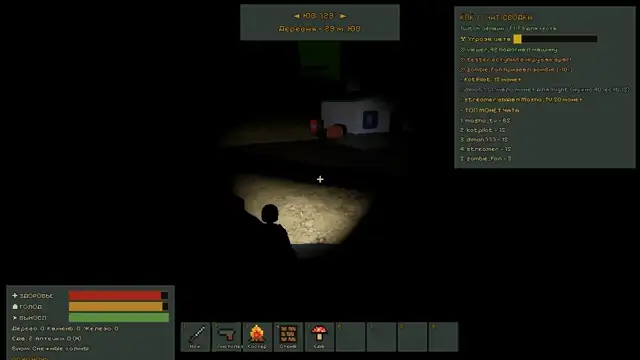
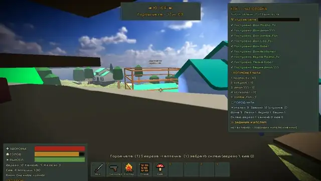
Анимированные превью из игровых скриншотов. Нормальное видео будет, когда стример выживет.
// Скриншоты
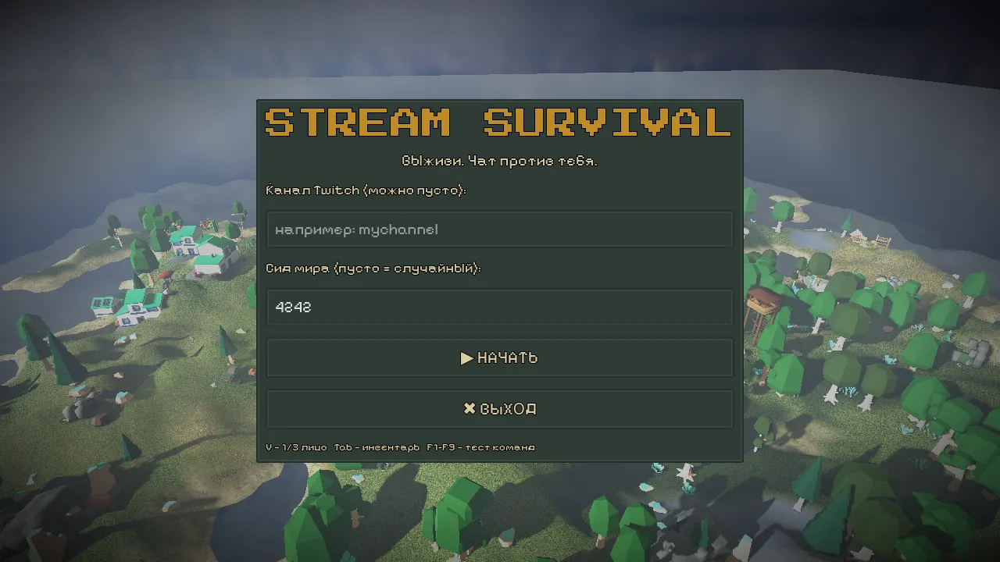
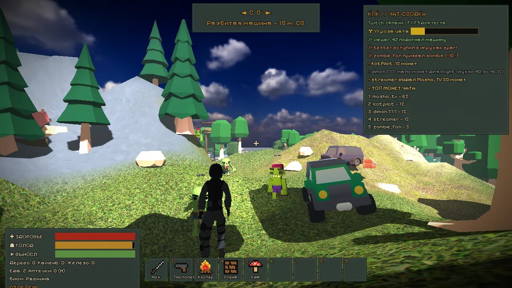
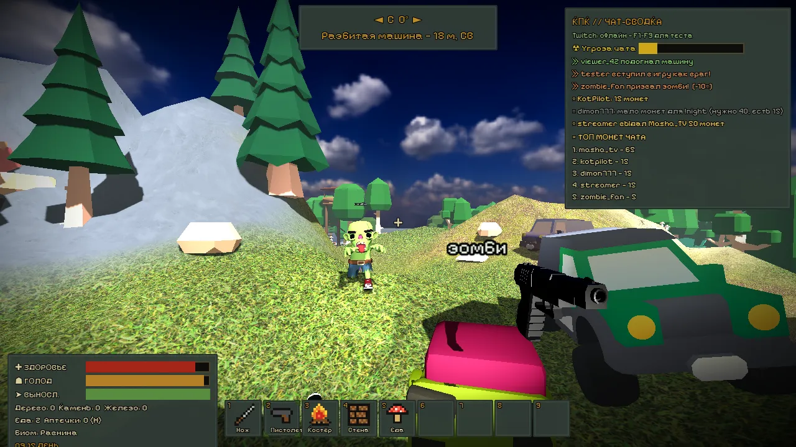
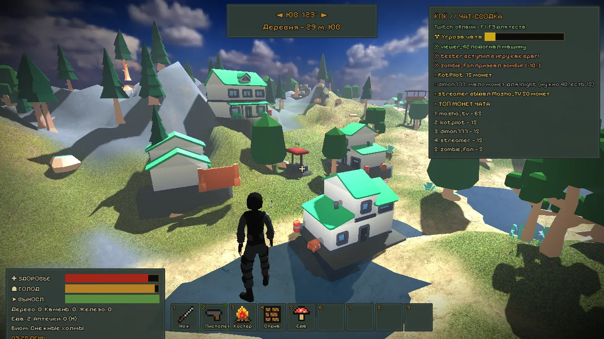
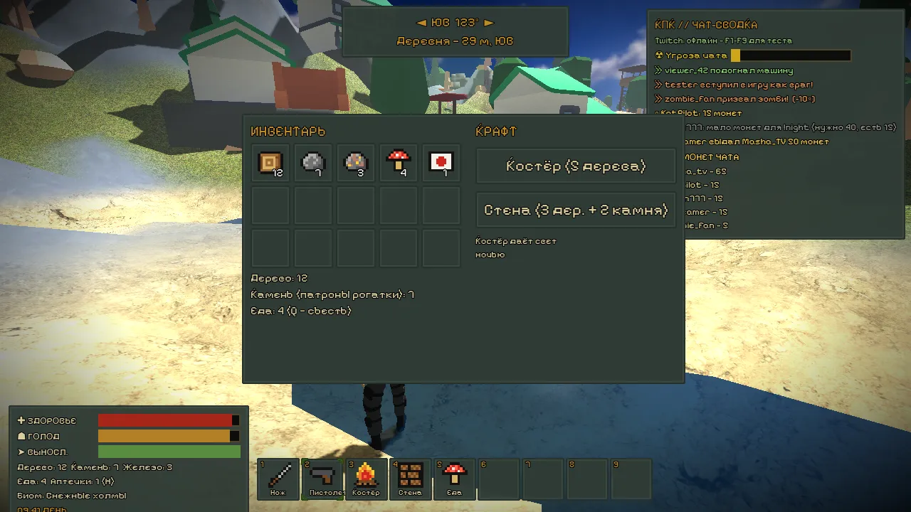
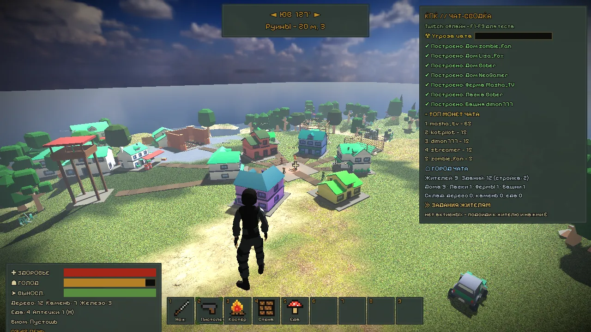
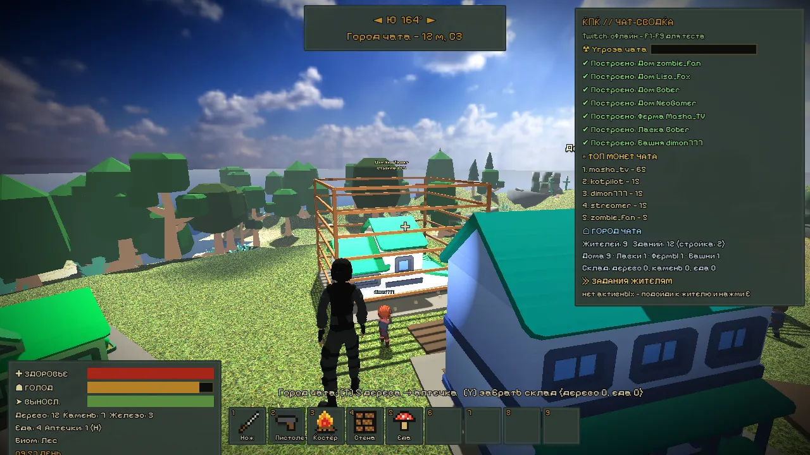
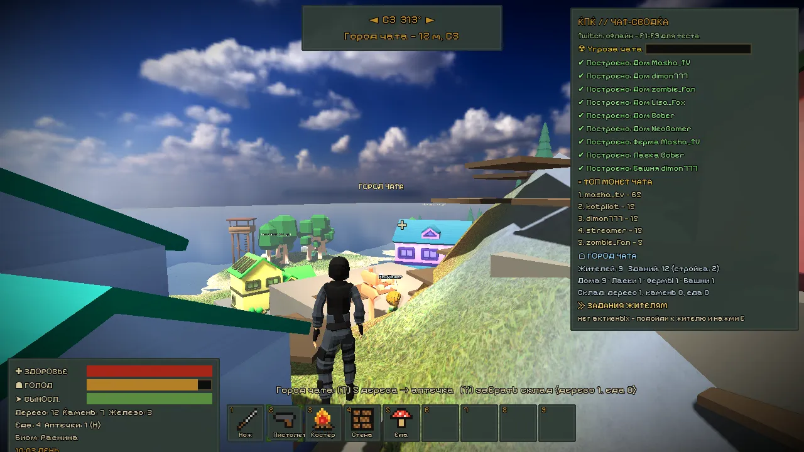
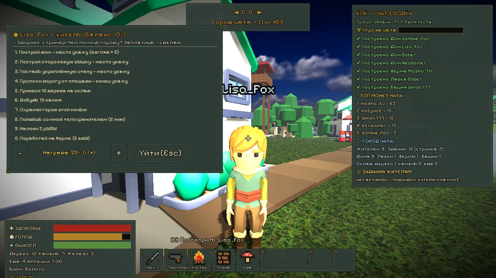
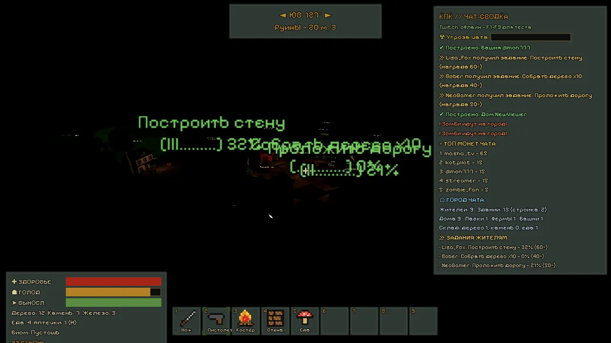
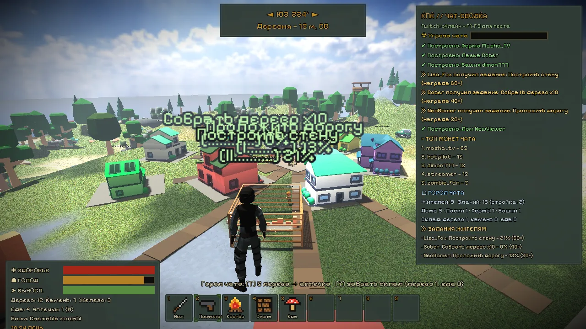
// Возможности
1-е и 3-е лицо
Переключение вида клавишей V в любой момент.
Процедурный остров
Биомы: лес, пустошь с радиацией, пустыня, болото, снег. Деревни, бункеры, вышки, руины, шахты и сундуки с лутом.
Зомби и призраки
Анимированные враги, ночью — опаснее.
Машина
Садись за руль и уезжай от орды.
Крафт
Собирай ресурсы (E), инвентарь в стиле Майнкрафт (Tab).
Монеты чата
Зрители копят монеты за активность и тратят их на команды. Стример выдаёт монеты сам.
Город зрителей
Как в Chatburg: зрители строят дома, а 3D-жители с их никами ходят по городу и достраивают его.
Задания в мире
Подойди к жителю-зрителю и нажми E — выдай задание: построить, собрать, охранять, идти за тобой.
// Команды чата
| Команда | Что делает |
|---|---|
| !zombie | Призвать зомби рядом со стримером |
| !ghost | Призвать призрака |
| !storm / !rain | Буря или дождь |
| !night | Мгновенно наступает ночь |
| !darkness | Тьма: видимость падает |
| !drop | Сбросить стримеру лут |
| !heal | Подлечить стримера |
| !car | Заспавнить машину |
| !join | Появиться в мире своим персонажем |
| !fish | Порыбачить за улов |
| !coins / !монеты | Узнать баланс монет |
| !give <ник> <сумма> | Стример выдаёт монеты зрителю |
| !дом | Купить и построить дом в городе зрителей |
Без стрима команды можно проверить клавишами F1–F9.
// 1000 приколов
Жми кнопку. Прораб уже █████.
прикол 0 из 1000
// Мемы (сертифицированный брейнрот)
ты написал !zombie за 5 монет, а стример умер за 3 секунды
«сейчас спокойно порыбачу»
«ещё одно задание жителю и спать»
стример переключился на 1-е лицо
Абсолютно никто:
«у нас дома есть город»
сигма-выживание, радиация 999 аура
сколько зомби призвать?
Можно.
— житель, который взял задание по E и 3 часа «идёт за инструментом»
редкий лут из сундука. Никто не знает, что она делает
когда чат скинулся на 40 !zombie, !storm и !night одновременно
когда зомби были медленные, а чат — добрый
в игре нет котов
это фича: зомби обиделся и ушёл
// Отзывы
Зомби Гена ★★★★★
«Меня призвали 14 раз за стрим. Ни разу не дали догнать. Стример бегает быстрее моей зарплаты. Рекомендую.»
Призрак ☆☆☆☆☆
«Включил !darkness, а стример включил фонарик. Я просто хотел поговорить. Ставлю ноль звёзд, их всё равно не видно.»
Машина ★★★★☆
«Меня заспавнили в озере через !car. Плаваю хорошо. Одна звезда снята за гудок, который я не нажимал.»
Житель «xX_Petya_Xx» ★★★★★
«Стример подошёл, нажал E и дал задание построить вышку. Построил сарай. Он сказал "█████". Лучший день в моей жизни.»
Сундук с лутом ★★★☆☆
«Внутри была одна палка. Это моя палка. Не трогайте.»
Буря (!storm) ★★★★★
«Меня вызвали за 50 монет. Сдула три дома и одну самооценку. Окупилась.»
// История версий (честная)
v0.3 — Город зрителей
Зрители строят дома за монеты, жители с никами ходят по городу. Прораб матерится (запикано). Задания по E. Житель-воздухан добавлен случайно, оставили.
v0.2 — Нормальные модели
Зомби стали анимированными и обидчивыми. Пистолет уменьшен с «размера автобуса» до «просто большой».
v0.1 — Кубики
Всё было кубиками. Стример тоже. Чат уже тогда мешал.
v0.4 — Скоро™
Коты (Котость), черемша-крафт, ещё больше способов чату испортить вам вечер.
// Как установить
- Скачай StreamSurvival.exe со страницы релизов.
- Запусти двойным кликом — ничего ставить не нужно.
- В меню введи название своего Twitch-канала и жми «Играть».
// Ещё от автора
Chatburg — город, который строит твой чат.
Открыть Chatburg →// Авторы и лицензии
- Модели персонажей, зомби, оружия — Quaternius (CC0)
- Модели построек, машин, UI — Kenney (CC0)
- Текстуры и небо — Poly Haven (CC0)
- Материалы — ambientCG (CC0)
- Шрифты Press Start 2P и Pixelify Sans — SIL Open Font License (OFL)